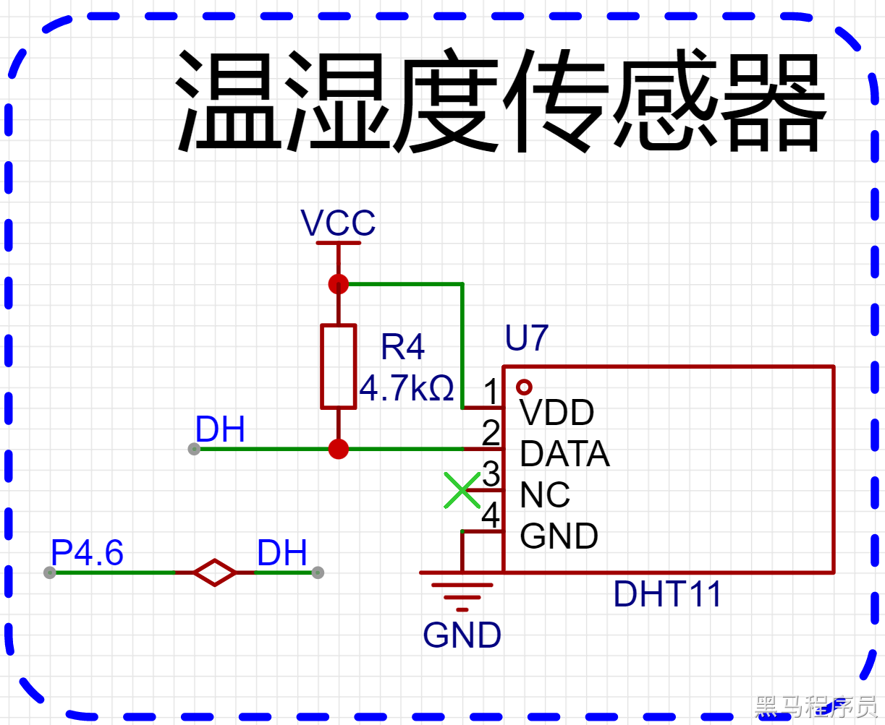
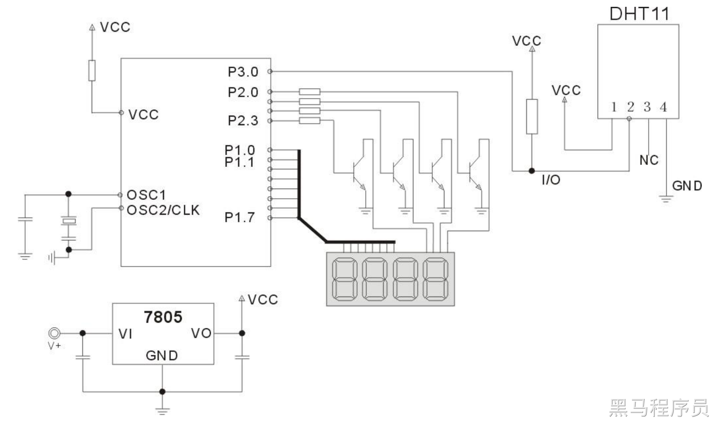
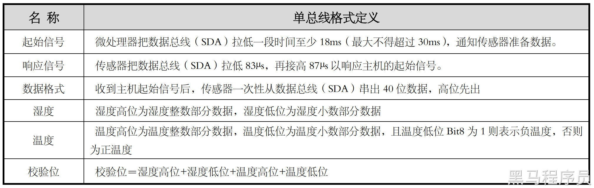
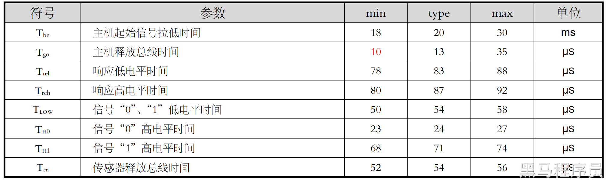

<!DOCTYPE lake>
<h2 data-lake-id="tRKzu" id="tRKzu"><span data-lake-id="ubb25649b" id="ubb25649b">学习目标</span></h2><ol list="u61322c66"><li data-lake-id="u408c89c4" fid="u194e893d" id="u408c89c4"><span data-lake-id="ud9a57444" id="ud9a57444">熟悉传感器手册的阅读</span></li><li data-lake-id="u08824e08" fid="u194e893d" id="u08824e08"><span data-lake-id="u3cd43666" id="u3cd43666">理解温湿度传感器工作流程</span></li><li data-lake-id="ua8aa6bb1" fid="u194e893d" id="ua8aa6bb1"><span data-lake-id="u62219c62" id="u62219c62">掌握逻辑分析仪调试协议</span></li><li data-lake-id="ue13898bc" fid="u194e893d" id="ue13898bc"><span data-lake-id="ud36c5d74" id="ud36c5d74">熟练掌握编码</span></li></ol><h2 data-lake-id="t66Pt" id="t66Pt"><span data-lake-id="u93b58148" id="u93b58148">学习内容</span></h2><h3 data-lake-id="bpCeg" id="bpCeg"><span data-lake-id="u8244e7a9" id="u8244e7a9">DHT11温湿度模块</span></h3><p data-lake-id="u156b6386" id="u156b6386"><span data-lake-id="uf7ed3656" id="uf7ed3656">DHT11 数字温湿度传感器是一款含有已校准数字信号输出的温湿度复合传感器。它应用专用的数字模块采集技术和温湿度传感技术，确保产品具有较高的可靠性与卓越的长期稳定性。传感器包括一个电容式感湿元件和一个 NTC 测温元件，并与一个高性能 8 位单片机相连接。</span></p><h3 data-lake-id="lTRBo" id="lTRBo"><span data-lake-id="udb96209c" id="udb96209c">原理图</span></h3><p data-lake-id="ueefebb04" id="ueefebb04"></p><ul list="ue1b413b5"><li data-lake-id="ua1de919f" fid="udcbc15b3" id="ua1de919f"><span data-lake-id="u28ef5577" id="u28ef5577">VCC： 电源。供电3v3-5v5</span></li><li data-lake-id="u6e2096bf" fid="udcbc15b3" id="u6e2096bf"><span data-lake-id="u04873b0b" id="u04873b0b">GND： 接地</span></li><li data-lake-id="u87e01cac" fid="udcbc15b3" id="u87e01cac"><span data-lake-id="ub45e594d" id="ub45e594d">DATA： 数据线</span></li></ul><h3 data-lake-id="zRIGi" id="zRIGi"><span data-lake-id="u4477a9bf" id="u4477a9bf">官方参考电路</span></h3><p data-lake-id="u524f8156" id="u524f8156"></p><p data-lake-id="ua57ceb95" id="ua57ceb95"><span data-lake-id="u73ce628b" id="u73ce628b"> 微处理器与 DHT11 的连接典型应用电路如上图所示，DATA 上拉后与微处理器的 I/O 端口相连。 </span></p><ol list="uee9e0113"><li data-lake-id="u327e5c58" fid="u8a40aee4" id="u327e5c58"><span data-lake-id="u1f27b22a" id="u1f27b22a">典型应用电路中建议连接线长度短于 5m 时用 4.7K 上拉电阻，大于 5m 时根据实际情况降低上拉电 阻的阻值。 </span></li><li data-lake-id="u2ddda229" fid="u8a40aee4" id="u2ddda229"><span data-lake-id="uca8c7b94" id="uca8c7b94">使用 3.3V 电压供电时连接线尽量短，接线过长会导致传感器供电不足，造成测量偏差。 </span></li><li data-lake-id="u5e0a1de1" fid="u8a40aee4" id="u5e0a1de1"><span data-lake-id="u1ea5dd26" id="u1ea5dd26">每次读出的温湿度数值是上一次测量的结果，欲获取实时数据,需连续读取 2 次，但不建议连续多次 读取传感器，每次读取传感器间隔大于 2 秒即可获得准确的数据。 </span></li><li data-lake-id="uc1aadf25" fid="u8a40aee4" id="uc1aadf25"><span data-lake-id="u45f06af5" id="u45f06af5">电源部分如有波动，会影响到温度。如使用开关电源纹波过大，温度会出现跳动。  </span></li></ol><h3 data-lake-id="BVQsg" id="BVQsg"><span data-lake-id="u12f9a26b" id="u12f9a26b">数据线通讯协议</span></h3><p data-lake-id="u7bc14502" id="u7bc14502"><span data-lake-id="u5e12ff71" id="u5e12ff71">DHT11 器件采用简化的单总线通信。单总线即只有一根数据线，系统中的数据交换、控制均由单总线</span></p><p data-lake-id="ue4da5f69" id="ue4da5f69"><span data-lake-id="u928cb293" id="u928cb293">完成。设备（主机或从机）通过一个漏极开路或三态端口连至该数据线，以允许设备在不发送数据时能够</span></p><p data-lake-id="u518c1178" id="u518c1178"><span data-lake-id="uf9a35683" id="uf9a35683">释放总线，而让其它设备使用总线；单总线通常要求外接一个约 4.7kΩ 的上拉电阻，这样，当总线闲置时，</span></p><p data-lake-id="ue9bbfd96" id="ue9bbfd96"><span data-lake-id="u9ad5c39d" id="u9ad5c39d">其状态为高电平。由于它们是主从结极，只有主机呼叫从机时，从机才能应答，因此主机访问器件都必须</span></p><p data-lake-id="ufb672564" id="ufb672564"><span data-lake-id="u61a974c3" id="u61a974c3">严格遵循单总线序列，如果出现序列混乱，器件将不响应主机。</span></p><h4 data-lake-id="o9258" id="o9258"></h4><h4 data-lake-id="lk1V9" id="lk1V9"><span data-lake-id="uab21c8cf" id="uab21c8cf">单总线传送数据位定义 </span></h4><p data-lake-id="uec282c4d" id="uec282c4d"><span data-lake-id="u696b5793" id="u696b5793">DATA 用于微处理器与 DHT11 之间的通讯和同步,采用单总线数据格式，一次传送 40 位数据，高位先 出。 </span></p><p data-lake-id="u24db62b2" id="u24db62b2"><span data-lake-id="ua0e753ac" id="ua0e753ac">数据格式: </span></p><p data-lake-id="u5a49482a" id="u5a49482a"><span data-lake-id="u2708bcef" id="u2708bcef">8bit 湿度整数数据 + 8bit 湿度小数数据 + 8bit 温度整数数据 + 8bit 温度小数数据 + 8bit 校验位。 </span></p><p data-lake-id="uf3d2b5c3" id="uf3d2b5c3"><span data-lake-id="u9ac79b0e" id="u9ac79b0e">注：其中湿度小数部分为 0。 </span></p><h4 data-lake-id="vGbBC" id="vGbBC"><span data-lake-id="u9f090a1f" id="u9f090a1f">校验位数据定义 </span></h4><p data-lake-id="u52cdd128" id="u52cdd128"><span data-lake-id="u5bf7fb09" id="u5bf7fb09">8bit 湿度整数数据 + 8bit 湿度小数数据 + 8bit 温度整数数据 + 8bit 温度小数数据”8bit 校验位等于 所得结果的末 8 位。  </span></p><h4 data-lake-id="Kb11x" id="Kb11x"><span data-lake-id="ua1ad6a5b" id="ua1ad6a5b">响应的数据时序</span></h4><p data-lake-id="u985e5d52" id="u985e5d52"></p><h3 data-lake-id="rXXNF" id="rXXNF"><span data-lake-id="uc99a505e" id="uc99a505e">协议实现</span></h3><span class="yuque-card-unsupported">[codeblock]</span><p data-lake-id="u2c7f9881" id="u2c7f9881"><span data-lake-id="u0bd1946e" id="u0bd1946e">实现业务需要参考逻辑分析仪，安装步骤完成数据的解析和分析，大概流程如下</span></p><ol list="ue696833a"><li data-lake-id="u43a27c77" fid="u22e4787a" id="u43a27c77"><span data-lake-id="uc36e7685" id="uc36e7685">主机发起起始信号。先拉低电平18ms，然后拉高。</span></li></ol><span class="yuque-card-unsupported">[codeblock]</span><ol list="u2b0ad8bc" start="2"><li data-lake-id="uc2161e9a" fid="uc707e7b8" id="uc2161e9a"><span data-lake-id="uf766aa76" id="uf766aa76">握手响应。确定传感器是否发出响应信号，信号先低电平83us，然后高电平87us</span></li></ol><span class="yuque-card-unsupported">[codeblock]</span><ol list="u72512ecc" start="3"><li data-lake-id="u57e19d02" fid="u6741dfbd" id="u57e19d02"><span data-lake-id="u1a80bfc5" id="u1a80bfc5">数据接收阶段。进行高低电平的判断，将高低电平的变化转换为 数字的0和1。54us低 23-27高电平 表示0。54us低 68-74高电平 表示1。结果是先高位后低位的形式。</span></li></ol><span class="yuque-card-unsupported">[codeblock]</span><ol list="u07091c9e" start="4"><li data-lake-id="u8d13d753" fid="u4b0c7691" id="u8d13d753"><span data-lake-id="uc38d44ae" id="uc38d44ae">数据校验。</span></li></ol><span class="yuque-card-unsupported">[codeblock]</span><p data-lake-id="u565de919" id="u565de919"><span data-lake-id="uf279fbc7" id="uf279fbc7">原始数据获得后，就是将数据转化为温湿度数据。</span></p><p data-lake-id="u7e7b3f0f" id="u7e7b3f0f"><span data-lake-id="ucc1e9979" id="ucc1e9979">温度转化：</span></p><span class="yuque-card-unsupported">[codeblock]</span><h2 data-lake-id="TFKwG" id="TFKwG"><span data-lake-id="u3d16bca0" id="u3d16bca0">练习题</span></h2><ol list="u8b45da89"><li data-lake-id="u1acb773b" fid="u618b774d" id="u1acb773b"><span data-lake-id="u34df99c2" id="u34df99c2">通过逻辑分析仪调试协议</span></li><li data-lake-id="u3c92210c" fid="u618b774d" id="u3c92210c"><span data-lake-id="u1a85344e" id="u1a85344e">实现协议解析。</span></li><li data-lake-id="ud7e7d24f" fid="u618b774d" id="ud7e7d24f"><span data-lake-id="u1e67aa80" id="u1e67aa80">实现数据换算获得温湿度数据。</span></li><li data-lake-id="uab5bbff3" fid="u618b774d" id="uab5bbff3"><span data-lake-id="u82fbd96d" id="u82fbd96d">为温湿度传感器封装驱动。</span></li></ol><h2 data-lake-id="RNEuG" id="RNEuG"><span data-lake-id="u073f1278" id="u073f1278">思考</span></h2><ol list="u41bfd436"><li data-lake-id="u06e3122e" fid="ubcf41ed2" id="u06e3122e"><span data-lake-id="uca66cf6b" id="uca66cf6b">DHT11是个模组，什么是模组？我们能不能造模组？造模组需要注意些什么?</span></li></ol>